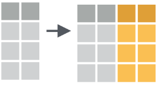

# A tibble: 10 × 4
a b c d
<dbl> <dbl> <dbl> <dbl>
1 0.956 0.550 -0.0235 1.52
2 0.633 -1.17 -0.699 -0.688
3 1.18 -0.149 -0.0609 -1.70
4 -0.675 -1.26 1.03 -0.335
5 1.75 0.0407 -1.34 0.532
6 -0.404 0.301 -0.261 0.0657
7 0.308 0.112 2.70 -1.08
8 0.510 0.406 -0.389 -1.50
9 2.18 -1.60 -0.968 0.615
10 -0.0721 1.66 -0.202 -0.363 Operaciones simultáneas
Encuentro 2
Christian Ballejo
Operaciones simultáneas por columnas
La filosofía de trabajo de tidyverse se plantea nunca copiar y pegar más de dos veces el código escrito, pero cuando necesitamos realizar la misma operación en varias columnas nos encontramos con este problema.
La solución, ofrecida dentro de dplyr, es un andamiaje que permite aplicar funciones y expresiones a varias columnas simultáneamente.
Es una forma de iteración, donde se repite la misma acción en diferentes objetos. En este caso los objetos serán columnas (variables) de la tabla de datos.
Las operaciones simultáneas pueden darse como transformación (dentro de un mutate()) o de resumen (dentro de un summarise())
Operaciones simultáneas por columnas
Creación de múltiples columnas con mutate()

Resumiendo múltiples columnas con summarise()

across()
La función across() es la encargada de dar soporte a estas operaciones múltiples (dplyr >= 1.0.0).
Sintaxis:
across(.cols, .fns, ..., .names)
.cols = columnas a transformar
.fns = función o funciones para aplicar a cada columna de .cols
... = argumentos adicionales de las funciones especificadas anteriormente (ejemplo: na.rm = T)
.names = nombres de las columnas de salida. Aquí, {.col} es un marcador especial al que se le puede agregar el sufijo deseado.
Resúmenes múltiples
Tomemos la siguiente tabla de datos ficticios:
Supongamos que queremos calcular la media de cada variable…
Resúmenes múltiples
Podríamos hacerlo repitiendo para cada variable
# A tibble: 1 × 4
a b c d
<dbl> <dbl> <dbl> <dbl>
1 0.636 -0.111 -0.0224 -0.293Pero esto rompe la regla general que buscamos de nunca copiar y pegar más de dos veces…
Resúmenes múltiples
Para solucionarlo aplicamos across() y realizamos el resumen simultáneo en una sola línea.
# A tibble: 1 × 4
a b c d
<dbl> <dbl> <dbl> <dbl>
1 0.636 -0.111 -0.0224 -0.293Nótese que el primer argumento es el rango de nombres de variables y el segundo la función que aplicamos a todas ellas (nombres de funciones sin paréntesis).
Seleccionar variables (.cols)
El primer argumento de across() responde de la misma forma que la función select() y aplican también las funciones ayudantes de selección.
Ayudantes de selección
everything(): coincide con todas las variables.group_cols(): seleccione todas las columnas de agrupación.starts_with(): comienza con un prefijo.ends_with(): termina con un sufijo.contains(): contiene una cadena literal.matches(): coincide con una expresión regular.
num_range(): coincide con un rango numérico como x01, x02, x03.all_of(): coincide con nombres de variables en un vector de caracteres. Todos los nombres deben estar presentes; de lo contrario, se generará un error de fuera de límites.any_of(): igual queall_of(), excepto que no se genera ningún error para los nombres que no existen.where(): aplica una función a todas las variables y selecciona aquellas para las cuales la función regresa TRUE.
Expresiones de selección
El argumento .cols también puede recibir construcciones booleanas utilizando los operadores conocidos como ! (negación) y conectores lógicos como & (AND) y | (OR) entre las funciones ayudantes de selección.
Por ejemplo:
Selecciona todas las columnas no numéricas, cuyo nombre comienza con “a”.
Agregar argumentos a las funciones
Hasta ahora vimos el ejemplo de aplicar una función simple como mean() a un grupo de variables.
Que sucede si entre los datos de esas variables hay valores NA?
Vamos a necesitar incorporar el argumento na.rm = TRUE a la función.
Donde lo hacemos dentro de un across()?
Agregar argumentos a las funciones
Supongamos que tenemos estos datos:
# A tibble: 5 × 4
a b c d
<dbl> <dbl> <dbl> <dbl>
1 -0.460 1.59 NA -0.00622
2 NA NA 0.694 2.05
3 -0.346 -0.0557 NA 0.777
4 0.785 0.934 -1.72 -0.635
5 -0.230 -1.60 0.168 -1.76 Vemos algunos valores NA entre las observaciones.
Agregar argumentos a las funciones
Si aplicamos el mismo código de across() anterior tendríamos como resultado:
# A tibble: 1 × 4
a b c d
<dbl> <dbl> <dbl> <dbl>
1 NA NA NA 0.0862Sería bueno que le pasaramos na.rm = TRUE a la función mean().
Agregar argumentos a las funciones
Existen dos formas sintácticas de hacerlo.
Una función estilo-purrr (tidyverse):
~ mean(.x, na.rm = TRUE)Una función anónima (base):
function(x) mean(x, na.rm = TRUE); o mejor en su forma de atajo:\(x) mean(x, na.rm = TRUE)
Múltiples funciones
Para incorporar más de una función dentro de across() debemos incluirlas dentro de una lista [list()]
datos_na |>
summarise(
across(a:d, list(
media = \(x) mean(x, na.rm = TRUE),
n_na = \(x) sum(is.na(x))))
)# A tibble: 1 × 8
a_media a_n_na b_media b_n_na c_media c_n_na d_media d_n_na
<dbl> <int> <dbl> <int> <dbl> <int> <dbl> <int>
1 -0.0628 1 0.217 1 -0.287 2 0.0862 0La lista contiene cada función a aplicar, bajo nombres definidos.
Cambiar nombres de resultados
Observemos que los nombres de las variables resultado se componen del nombre de la columna, un guión bajo y el nombre definido de la función aplicada, para distinguir entre las múltiples funciones del across().
La estructura de estos nombres se pueden modificar con el argumento .names de across().
Los marcadores especiales para el nombre de columna es {.col} y para el nombre de la función definida es {.fn}.
Cambiar nombres de resultados
Por ejemplo, podríamos invertir el orden predeterminado de los nombres del resumen.
Transformación de tipos de datos
Hasta ahora vimos como funciona la función across() dentro de un resumen (summarise) pero al comienzo también dijimos que se puede utilizar para transformaciones masivas de datos.
Para lograr esto la función se vincula con mutate() modificando las variables originales o bien creando nuevas variables si cambiamos su nombre con .names.
Transformación de tipos de datos
Aplicamos la función coalesce() para convertir los valores NA en ceros, transformando las variables originales.
Transformación de tipos de datos
Hacemos lo mismo pero cambiamos los nombres de las variables de salida del mutate() que van a coexistir con las originales.
# A tibble: 5 × 8
a b c d a_na_cero b_na_cero c_na_cero d_na_cero
<dbl> <dbl> <dbl> <dbl> <dbl> <dbl> <dbl> <dbl>
1 -0.460 1.59 NA -0.00622 -0.460 1.59 0 -0.00622
2 NA NA 0.694 2.05 0 0 0.694 2.05
3 -0.346 -0.0557 NA 0.777 -0.346 -0.0557 0 0.777
4 0.785 0.934 -1.72 -0.635 0.785 0.934 -1.72 -0.635
5 -0.230 -1.60 0.168 -1.76 -0.230 -1.60 0.168 -1.76 Filtros
En el caso de iteraciones similares para incluir dentro de la función filter() el paquete dplyr propone dos funciones específicas: if_any() e if_all().
En el primer caso, la función enmascara una repetición de OR lógicos y en la segunda una secuencia de AND lógicos.
Filtros
# A tibble: 3 × 4
a b c d
<dbl> <dbl> <dbl> <dbl>
1 -0.460 1.59 NA -0.00622
2 NA NA 0.694 2.05
3 -0.346 -0.0557 NA 0.777 Es lo mismo que filter(is.na(a) | is.na(b) | is.na(c) | is.na(d))
# A tibble: 0 × 4
# ℹ 4 variables: a <dbl>, b <dbl>, c <dbl>, d <dbl>Es lo mismo que filter(is.na(a) & is.na(b) & is.na(c) & is.na(d))
Filtros
Las dos funciones de filtro trabajan con el mismo esquema que across(), por lo tanto se le puede aplicar una función o expresión de condición (debe devolver TRUE o FALSE)
Práctica
Siga los siguientes pasos para descargar y trabajar en la practica de este encuentro.
- Descargue la carpeta comprimida - Practica2
- Descomprima la carpeta
- Inicie el proyecto Encuentro2.Rproj
- Abra el script practica_encuentro2.R y responda las consignas

Instituto Nacional de Epidemiología